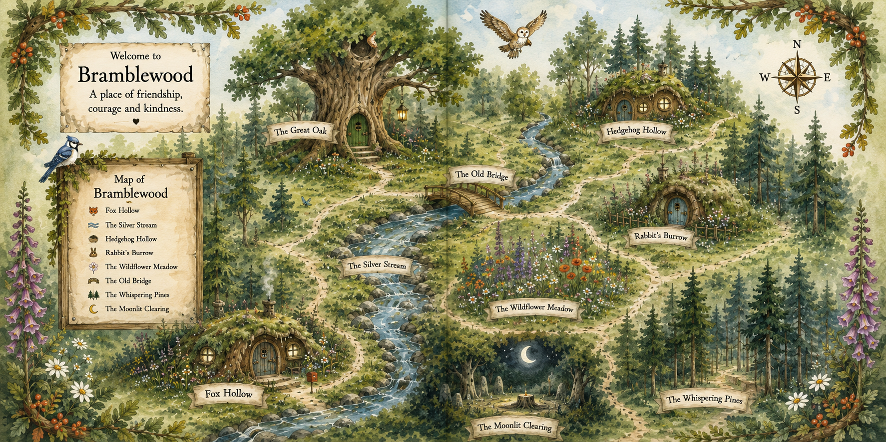

Skip to content
Bramblewood Books
The Bramblewood Series
Menu
☰
Home
Books
Meet the Friends
Explore Bramblewood
Meet Bethany
Contact
EXPLORE THE WOODLAND
The Bramblewood map
Every path leads somewhere wonderful.
−
+
Whole map
Read labels

Swipe or scroll to explore; use + to look closer.
Open full-size map